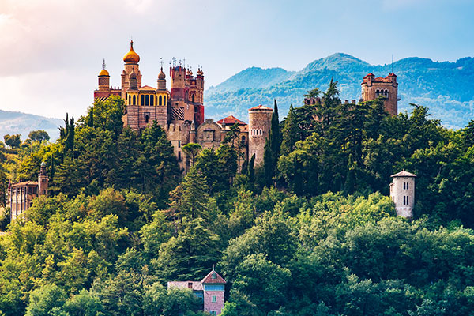
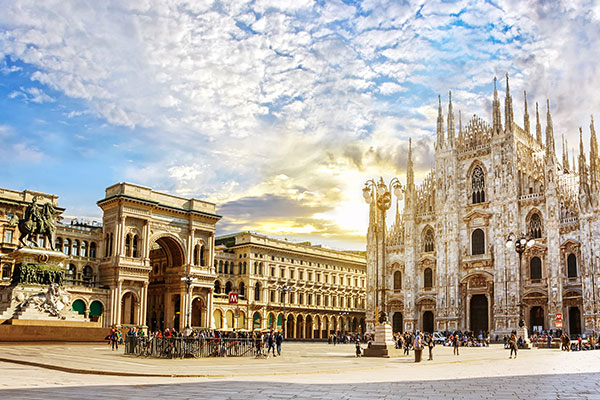
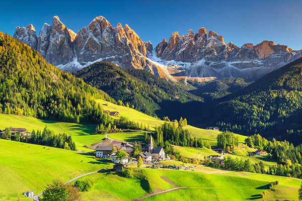
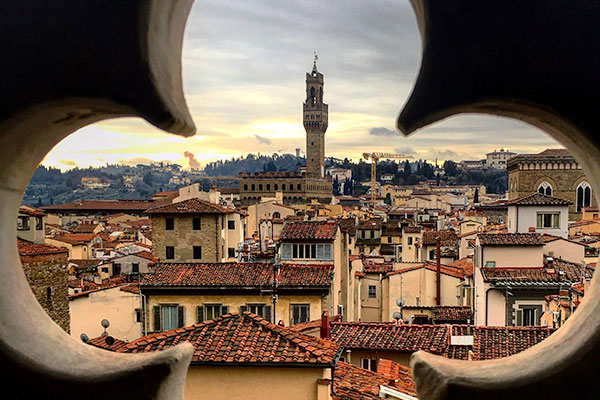
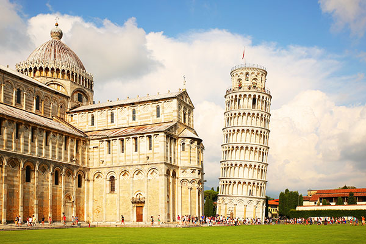
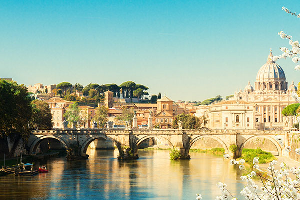
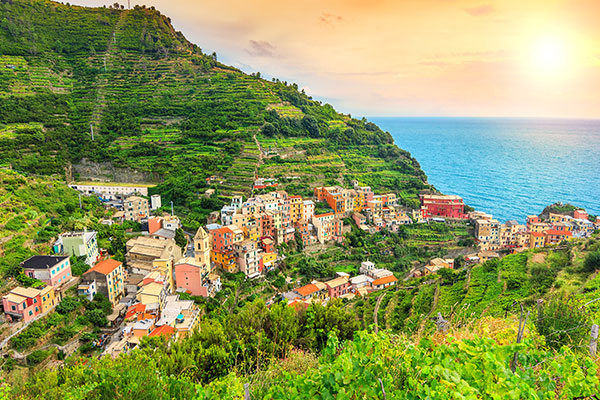
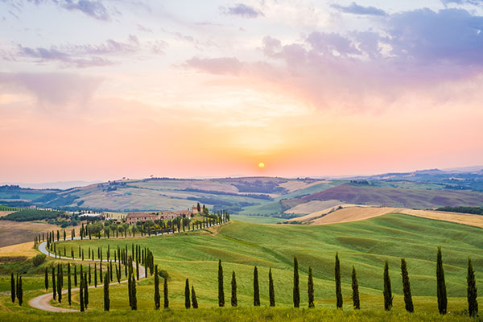
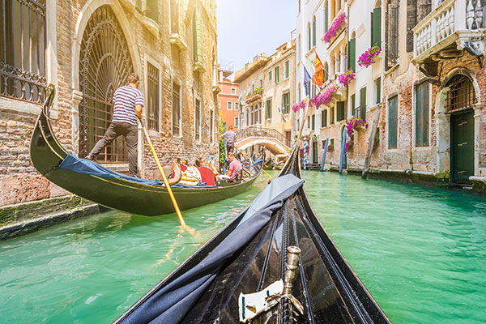
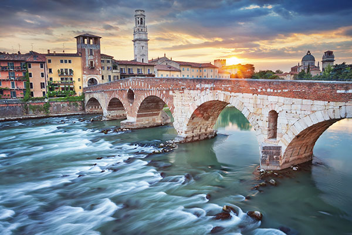

I have many reasons to want to go to Italy.Italy is a fusion of many things. I dream of going to Italy in future.
taly, home to stunning architecture, incredible art, delicious cuisine and tasty wine is a destination on most people’s bucket list. Whether it’s on yours or not we’re here to show you the most stunning locations in Italy and give you a reason to go! Whether you want to be in the city, on the beach or in the mountains Italy has something for you
Italian culture largely stems from family relationships, the arts, architecture and food, and Italians view their culture as one of their greatest achievements and exports. The family is at the very center of the social structure.
Italian cuisine is one of the most popular in the world and has heavily influenced food in other countries, including the United States. Italian food is noted for its simplicity, fresh ingredients, and regional diversity. Cheese, wine and coffee (especially espresso) are staples in Italian meals.
Pasta with tomatoes or tomato sauce is served throughout Italy, but the variety and ingredients vary by region. Northern Italy offers stuffed pasta, risotto and polenta, with seafood, basil (pesto), ham (prosciutto), sausage, various cheeses, nuts and olive oil featured prominently.
Southern Italian pasta features ricotta cheese, eggplant, capers, fish (anchovies and sardines), olives, olive oil, artichokes and garlic. Different regions have their own specialties, including suckling pig in Sardinia. Sicilian food is based in traditional Italian cuisine, but it is also heavily influenced by Spanish, Arab and Greek cuisine. Of course, Italy is also known for pizza and gelato.
These are the places I want to have my Pictures taken.
         "Venice is like eating an entire box of chocolate liqueurs in one go."
"You may have the Universe if i may have the Italy."
"Italy, and the spring and first love all together should suffice to make the gloomiest person happy."
"Even now I miss Italy dearly, I dream about it every night."